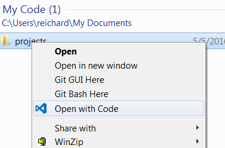
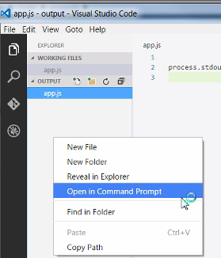

Program 1: Creating Program Projects
This section show the steps to create a project. This will be how you start each of the programming exercises.
This one will create a classic first program called "Hello, World". Its simply prints out the word "Hello, World".
All the programming projects will follow these basic steps:
- Create a new folder
- Edit the folder in Visual Studio Code by adding the files needed for your project
- Write your code in a file that will be saved as 'app.js'
- Run your code from the command line
Refer to this project for these basic steps.
Opening a folder in visual Studio Code
Create a new folder somewhere for example in the Documents folder.
Right-click on the new folder and select "Open in Code".

This opens Visual Studio Code with the project directory as the default directory.
If you add files or other folders, they go into that folder.
Create a new file using the File Menu or one of the many ways you can in Visual Studio Code.
Type the following into the new file.
process.stdout.write("Hello, World\n");
This tells the system to type out in the command window the message 'Hello, World'.
The '\n' is a special part of the message that moves to the next line.
Save the file and name it 'app.js'
Running your first Program
Now that you've written you first program lets run it.
We will do this from the command prompt.
We can quickly run the command prompt in this Folder by right clicking on the file app.js and saying: 'Open in Command Prompt'
This is one of the added features Visual Studio Code has to help you.

From the command line type: node app.js
C:\> node app.js
This should run your program and type out 'Hello, World'
If a bunch of ugly text spews out - Go back and make sure you typed the code in correctly.
Do this until you get it right.
Video: Your first program
The following video shows how to Create and run your first program.